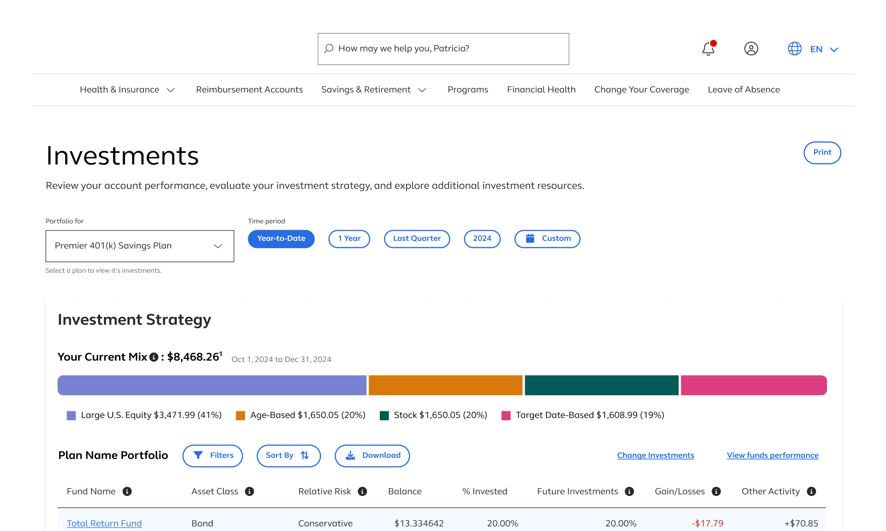

1 Minute Summary
1 Minute Summary
the problem
The Investments experience was outdated and hard to navigate, failing to meet the needs of wealth-focused users. To retain a $50M client, the product needed to feel like a financial tool with clearer data and a more intuitive structure.
my approach
Before designing anything, I grounded myself in the product's history to avoid repeating decisions that had already been tried and discarded. From there, facilitated a cross-functional design workshop that surfaced the central problem: information needed to be surfaced to the homepage and Fund Performance needed to be decoupled into it's own page. From that point, I designed and tested new designs and features alongside client and other stakeholders
The outcome
Across six rounds of moderated usability testing, the final experience delivered a cohesive, scalable solution that improved data cisibility, enhanced fund comparison, and aligned with performance and accessibility standards. The final deliverables included two new investments pages and new data card features that all products could utilize. Both design concepts were fully documented developer handoff with both design launching in parallel to meet deadline. There was a increase in homepage performance and Investments clarity.


Want the full story?
The sections below dives deeper into research, design decisions, iterations, and learnings.
Background

My Role
Product Design Lead
Design Strategy, Visual Design, Rapid Prototyping
project type
Redesign
team
1 Other Designer
1 PM
1 Researcher
2 Engineers
3 other stakeholders
duration & status
6 months
Launched Q4 2025
company
alight solutions
demo
Modernizing the Investments experience was a critical initiative aimed at improving both business retention and user trust
About the product
The "Investments" page served Wealth DC clients (employers offering Wealth Management and Defined Contribution (DC) plans) by giving their participants visibility into their personal portfolios and fund performance. Within the Portfolio section, users could view their investment strategy through visual graphs and tables, along with an activity summary. The Fund Performance section allowed users to view a broader list of available funds, compare rate of returns, explore performance charts, and access detailed Fund Fact Sheets.
Why this work mattered now
The experience had accumulated problems over time such as overlapping features, inconsistent terminology, and a page structure that no longer reflected how users actually sought help. As the platform's user base grew and healthcare needs became more complex, the gap between what the product offered and what users could find became impossible to ignore. Engagement with self-service tools was low.Support volume was higher than it should have been. And the Health Pro model wasn't landing the way it was meant to.
drivers for the redesign
The urgency behind this project was driven by both business and user needs. Most notably, the redesigner was essential to help retain a $50 million client contract, making it a high-stakes initiative. Internally, there was also press to evolve the interface from one that resembled a health benefits experience to something that felt more like a modern financial product, capable of conveying investment data with clarity, trust, and professionalism.
Problem
While the Investments experience offered a range of valuable data, the way it was structured and presented made it difficult for users to engage with confidently
key usability issues
The experience suffered from a fragmented structure and outdated UI patterns. Key portfolio and fund data was buried deep within subpages, requiring multiple clicks to access. The toggle between Portfolio and Fund Performance lacked clarity, and once on the Fund Performance page, the layout didn't support side-by-side fund comparisons. Data visualizstions were minimal or unclear, and the limited use of interactive or accessible components made it hard for users to digest or act on the information presented.
What we saw in the evidence
Internal product teams had received repeated user feedback that users could not easily locate or interpret their investment information. Stakeholders also noted that page analytics showed low engagement with deeper tools like Fund Fact Sheets and performance comparisons. The lack of clear entry point to this content from the homepage was further limiting visibilty into the product's value.
what users were struggling with
Users lacked compelling visual tools to interpret fund data and were often met with dense, table-heavy layouts that made comparisons difficult. Fund details were presented in isolation, offering little guidance on how one fund's performance stacked up against others. The interface did not encourage exploration or comparison, ultimately preventing users from making informed financial decisions based on their rate of return or asset strategy.

Guardrails
This project aimed to redesign and restructure the Investments experience to better support user comprehensions, promote fund comparison, and modernize the overall interface to meet client expections.
Goals for this project
- User: Users needed to quickly understand how their portfolio was performing, easily compare fund options, and navigate between high-level overviews and detailed data views. The experience also needed to surface key investment insights directly from the homepage to encourage engagement with the broader toolset, all while supporting confident decision-making through clear visuals and structured layouts.
- Business: Retain a high-value client and preserve a $50M contract. Product stakeholders sought to reframe the interface to feel more like a professional financial tool rather than a healthcare platform, while also increasing visibility and usage of the Investments and Fund Performance features. Additionally, the design needed to align with a broader modernization effort across Wealth products for a more consistent user experience.

Approach
Project began with a 3 day design workshop that brought together product owners from the Wealth portfolio to align on goals, pain points, and success criteria
Restructure the Investments Experience
We identified the need to restructure the investments experience into 3 distinct components: a homepage entry point with data cards, a streamlined investments landing page, and a newly decoupled Fund Performance page. Each surface required its own structure while maintaining a cohesive visual and interaction model across the flow.
Surface Buried Wealth Insights (Discovery Milestone)
For the homepage, I designed modular data cards that surfaced previously buried wealth insights. The first iteration featured a dynamic card formart using horizontal and nested left navigation to display multiple categories of data. However, performance testing recealed this design would negatively impact the shared homepage. We pivoted to a more scalable solution — individual cards built from a unified structure. This new concept allowed users to select up to six cards to personalize their view while keeping the experience performant and consistent with our design system.
Finalize Content Hierarchy
For both the Investments and Fund Performance pages, I prioritized clarity through content hierarchy and introduced improved data visualization to support fund comparison. I began with low- to mid-fidelity wireframes to confirm layout and structure, then progressed into high-fidelity designs informed by stakeholder feedback and multiple rounds of testing. I also collaborated with our accessibility team to ensure all data visualizations had table equivalents and met accessibility standards.
Maintain Documentation
Throughout the project, I maintained a dedicated handoff file in Figma with updated flows, page states, and documentation. Separate prototypes were created for usability testing and client demos to ensure clarity confidentialy, and alignment across audiences. Despite the evolving scope, I managed changes through proactive communication and maintained momentum to deliver all assets on time.

Results
The final experience delivered a cohesivem scalable solutuion that improved data visibility, enhanced fund comparison, and aligned with performance and accessibility standards
What Improved After The Design
The final experience delivered a cohesive, scalable solution that improved data visibility, enhanced fund comparison, and aligned with performance and accessibility standards. Through iterative testing, thoughtful restructuring, and collaboration with product and engineering teams, we successfully met the goals of the redesign while supporting long-term product scalability.
We conducted 6 rounds of usability testing to validate the full user journey —from homepage data cards to the investments and Fund performance pages. Insights from testing led to key refinements, including simplifying the card structure, enhancing content hierarchy, and improving comparison tools for rate of return data. These changes directly addressed user struggles with interpretation and navigation.
The data card framework was transformed from a complex dynamic component into a set of modular, responsive cards that could be personalized by users and reused across other product lines. I contributed a template version to the design system, enabling future expansion while maintaining consistent sizing, content flexibility and visual alignement.
Both landing pages feature accessible data visualizations paired with table formats, as well as toggle options on the Fund Performance page to give users control over how data was viewed. Despite mid project scope increases and performance pivots, I delivered all finalized designs, redlines, and prototypes on time —ensuring a smooth development handoff and supporting the successful renale of a high-stakes client contract.
Demo
Thank you for reading!

Contents
don't be a stranger!
Let's collaborate and create something amazing!